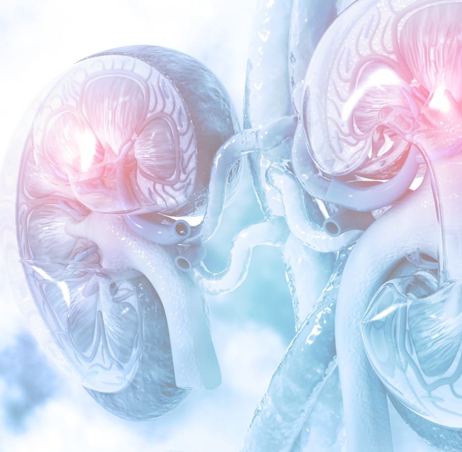
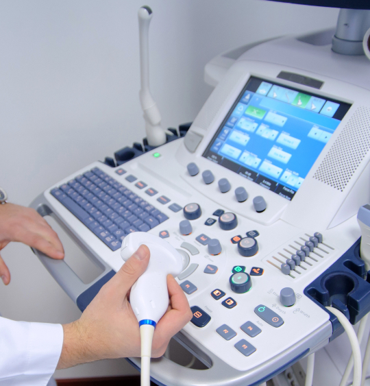

Я знаю, как Вам помочь
лечение заболеваний
лечение заболеваний
мочеполовой системы
Добро пожаловать на персональный сайт
врача Песегова Станислава Вадимовича
-
2
Патентных
изобретения -
18
Лет успешной
практики -
4
Сертификата
специалиста

Песегов Станислав Вадимович
Главный врач Клинического центра №7, врач-уролог, кандидат медицинских наук
Почему выбирают меня
Я врач-уролог, кандидат медицинских наук со стажем работы более 18 лет. В 2016 году защитил кандидатскую диссертацию по тематике мочекаменной болезни.
Действительный член Российского общества урологов (РОУ) и Российского общества онкоурологов (РООУ), Европейской ассоциации урологов (ЕАУ).
Автор многочисленных публикаций в специализированных медицинских изданиях и 2-х патентных изобретений. Внесен в реестр главных исследователей МЗ РФ.
Регулярно повышаю свою квалификацию прохождением курсов повышения квалификации, имеются сертификаты по хирургии, урологии и ультразвуковой диагностике.
Принимаю участие в научно-исследовательских работах, научно-практических конференциях и экспертных школах.
-
Оказываемые услуги
В области урологии, урогинекологии и заболеваний мочеполовой системы
-
Андрология
Обследование и лечение заболеваний органов мужской мочеполовой системы, эректильной дисфункции, преждевременной эякуляции, андрогенный дефицит, мужское бесплодие.
-
Урология
Диагностика и лечение урологических заболеваний, мочекаменной болезни, инфекций мочеполовой системы, а также нейрогенных расстройств мочеиспускания.
-
Урогинекология
Женская урология, диагностика, лечение и профилактика заболеваний мочеполовой системы у женщин. Лечение недержания мочи, заболеваний уретры, цистита у женщин.
Купон на скидку до 80%
Действует на следующие виды урологического обследования
- – базовое (1350 руб. вместо 4500);
- – расширенное с исследованиями на инфекции (1822 руб. вместо 8680);
- – полное с исследованиями на инфекции (2210 руб. вместо 9610).
Акции
Я являюсь главным врачом Клинического центра № 7.
Почему выбирают нашу клинику?
Почему выбирают нашу клинику?
О клинике
- 01 Полная конфиденциальность
- 02 Квалифицированные специалисты
- 03 Самые современные технологии
- 04 Результаты анализов в течение одного дня
Наш клинический центр оказывает широкий спектр услуг в области мужского и женского здоровья.
Мы аккредитованы министерством здравоохранения Российской Федерации на право проведения клинических исследований лекарственных препаратов и в этом направлении наша клиника тесно сотрудничает с организацией ЛАБМГМУ.
В своей повседневной практике совместно с сервисом Online-Visit мы широко используем телемедицинские технологии, отвечающие требованиям законодательства.
Содействуем соблюдению права пациентов на получение наилучшего качества медицинской помощи постоянно повышая профессиональный уровень своих сотрудников. Они принимают участие в научно-исследовательских работах и конференциях, постоянно публикуются в специализированных медицинских журналах.

Здесь Вы найдете интересную информацию
и занимательные факты о здоровье
Полезно знать
Мне доверяют
Отзывы пациентов, которые прошли лечение у Песегова Станислава Вадимовича
Контакты
Адрес
- м. Волоколамская, м. Митино г. Москва, Новотушинский проезд, дом 8, корпус 1
Режим работы
-
Будние 07:30 – 20:00
Суббота 07:30 – 16:00
Воскресенье 08:00 – 16:00